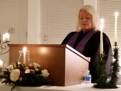

In the early 1990's Sally found Arlington Metaphysical Chapel while doing business in the Georgetown area. She received "messages" through Rev. Reed Brown, a well known medium, ...first from her brother John, then from her father. Although these messages from her family through Rev. Brown were accurate and evidence of their continuance of life affirmed, there were many questions left unanswered.Sally decided to volunteer at The United Metaphysical Churches headquartered in Roanoke, Va., for several years in the kitchen. There, she thought, she would "see" who these people really are and how this spirit communication was done.This quest in Roanoke led her to her love of Divine Metaphysics and her attendance at the Seminary at Roanoke. Sally became an ordained minister and certified medium out of that organization.
The question of "how these metaphysical things can happen in a physical world" led Reverend Sally to study Quantum physics where she found that its theories explained the mysteries found in divine metaphysics.Now known for her work in mediumship, Rev.Sally states, "The joining of Divine Metaphysics and Quantum physics is truly where spirituality and science meet." This nexus is where Rev. Sally has found answers and a philosophy that makes sense in a 21st century world.
It’s a brave new world and an honor to be the second Metaphysical ministry in Northern Virginia.Providing Divine Metaphysical teachings, services and workshops for the community, we believe that Divine Metaphysics is the Spirituality for the 21st century; its where Science and the Divine meet.